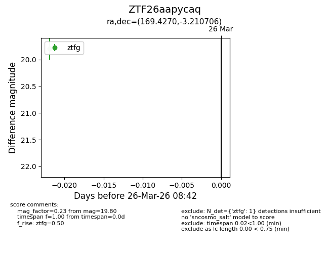
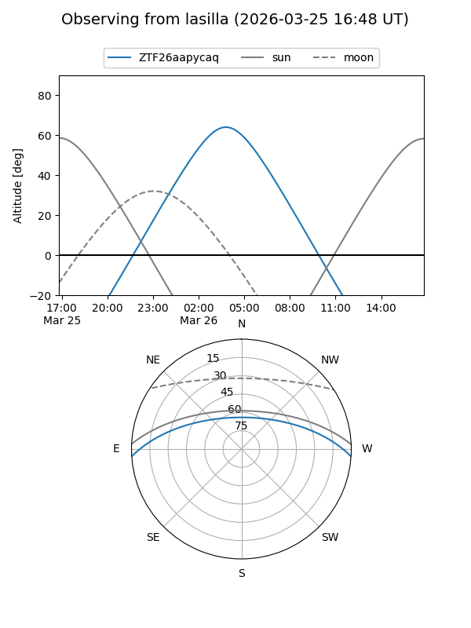
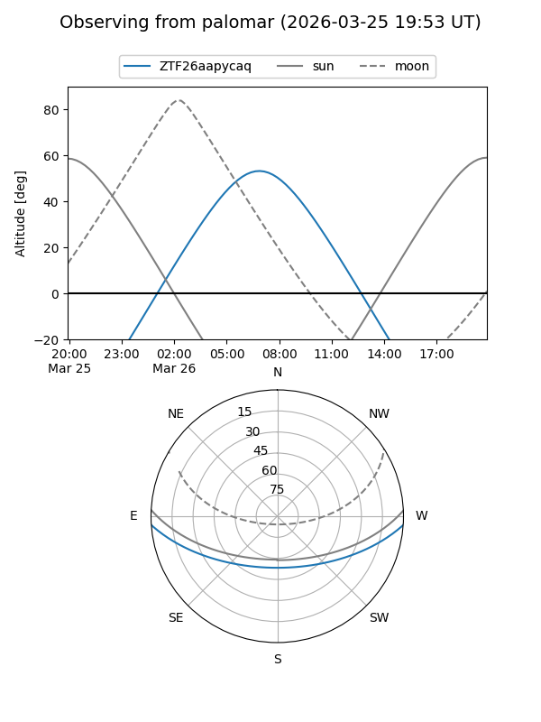

ZTF26aapycaq
Target ZTF26aapycaq at 2026-03-26 08:44
Aliases and brokers:
FINK: link
Lasair: link
ALeRCE: link
alt names
ZTF26aapycaq (ztf,fink_ztf)
Coordinates:
equatorial (ra, dec) = 169.4270,-3.21071
equatorial (HMS+DMS) = 11:17:42.48,-03:12:38.54
galactic (l, b) = (262.5951,+52.16398)
Flags:
Photometry:
last ztfg=19.80
1 ztfg detections
Lightcurve

Visibility


Additional plots